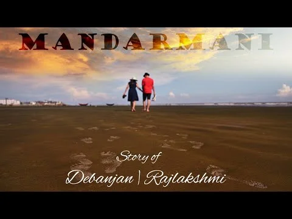
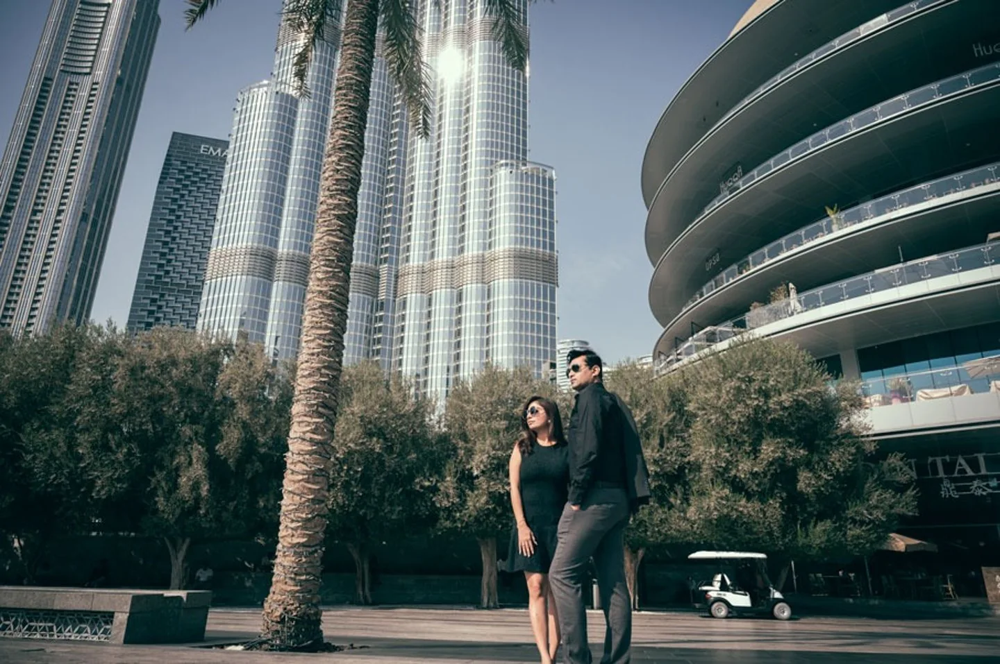

Kolkata
KolkataWest Bengal · Photographed here
A city setting for a story close to home, from familiar streets to a privately booked indoor or heritage setting.
Places and practical details
Explore places shown in the studio’s portfolio, then compare the travel, access, changing and permission questions that make a shoot comfortable.
4 places in the portfolio
KolkataWest Bengal · Photographed here
A city setting for a story close to home, from familiar streets to a privately booked indoor or heritage setting.
 Purulia
PuruliaWest Bengal · Photographed here
Open landscapes and a journey with room to slow down. Plan the route around the actual locations you choose.

MandarmaniWest Bengal · Photographed here
A coastal setting for a quieter story together. Keep the route, weather and changing arrangements simple.

DubaiUnited Arab Emirates · Photographed here
Architecture and city scale, with an international plan that needs careful coordination.
No portfolio location matches both choices. Try a different setting or journey, or tell the studio the place you have in mind.
These cards show places represented in the published work. They do not confirm current studio availability, venue access or an international service package.
West Bengal · planning guide
Start with the look you love, then choose the exact property or route. A city shoot can work around travel, crowds and a convenient changing base.
As one specific Kolkata-area example, Eco Park’s official page lists a pre-wedding photo/video fee of ₹10,000 plus GST and a three-camera limit. This is not a fee for every Kolkata location or a studio package. Reconfirm the current terms directly.
Eco Park official professional shoot booking
Source checked 20 November 2026. Facilities, permissions and fees still need direct confirmation for your exact date and venue.
West Bengal · planning guide
Purulia is a district, not a single shoot venue. Choose a manageable route rather than attempting every scenic stop in one session.
The district’s tourism page provides destination context. It does not establish photography permission, a shoot fee or facility availability for your route.
Purulia district official tourist places
Source checked 20 November 2026. Facilities, permissions and fees still need direct confirmation for your exact date and venue.
West Bengal · planning guide
A beach session needs a comfortable base and a plan for the actual conditions. Decide what can be done within the available light and access.
The tourism page supplies destination information. It is not permission for a professional shoot or a current quotation from a property.
West Bengal Tourism · Mandarmani
Source checked 20 November 2026. Facilities, permissions and fees still need direct confirmation for your exact date and venue.
United Arab Emirates · planning guide
The portfolio shows previous photographs in Dubai. A new international shoot depends on current studio availability, travel arrangements and the exact location approvals.
DFTC lists exemptions for weddings and personal filming, while other production activities have different requirements. Confirm how the exact planned shoot is classified and obtain any location-owner approvals; do not assume a blanket permission.
Dubai Film and TV Commission · official FAQ
Source checked 20 November 2026. Facilities, permissions and fees still need direct confirmation for your exact date and venue.
A plan that feels like you
Your plans can be detailed, undecided or somewhere in between. Share what matters and ask for a current written proposal.
Build your plan